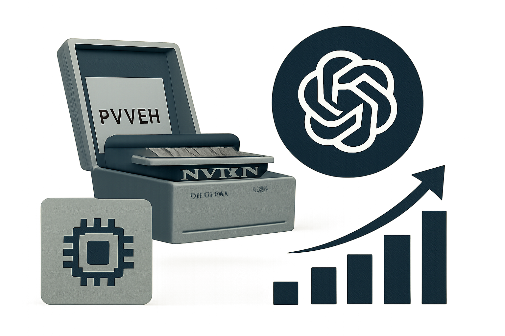

07 cryptocellar.org 게시일 2026.09.22
GPT-6 Astra, 21년째 미해독 에니그마를 풀었다

이 소식은 새 제품 출시가 아니라, AI가 실제 연구 과제를 어떻게 풀었는지 보여주는 사례다. 문제는 2005년부터 공개돼 있었지만 아무도 못 풀었던 전시 암호문이다. 검증자는 모델이 해독 후보를 고르고, 관련 기록을 찾고, 필요한 소프트웨어까지 직접 만들어 문제를 풀었다고 적었다.
핵심 브리핑
GPT-6 Astra는 2005년부터 풀리지 않던 에니그마 암호문 MVUEH를 이틀 만에 해독했다. Crypto Cellar Research의 Frode Weierud는 2026년 9월 15일 해독 결과 검증을 요청받았고, 결과가 맞다고 판단했다.
이 암호문은 1941년 7월 10일 독일군 무전 기록에 남아 있었다. 같은 날의 다른 미해독 메시지 하나는 2017년에 풀렸지만, 그때 찾은 키로는 MVUEH를 풀 수 없었다. 이번에 나온 MVUEH의 키는 다른 메시지들과 완전히 달랐고, 바퀴 순서도 512가 아니라 253이었다.
해독 과정에서 몇 가지 이유가 드러났다. 원본 암호문을 옮겨 적는 과정에 여러 오류가 있었다. 에니그마의 왼쪽 바퀴가 72번째 글자에서 회전하는 드문 상황도 있었다. 검증자는 이런 점이 과거 해독을 막았을 수 있다고 적었다.
연구자는 GPT-6 Astra가 스스로 후보 메시지를 고르고, 다른 메시지와의 평문 유사성을 의심했다고 설명했다. 이어 ROSENOW ROSENOW라는 반복 지명을 단서로 잡고, 에니그마 시뮬레이터와 Bombe용 파이썬·C++ 소프트웨어를 만든 뒤 해독을 진행했다고 밝혔다.
해독 로그 분석은 아직 끝나지 않았다. 연구자는 2026년 7월 독일 연방기록보관소의 무전 자료 묶음을 공지했는데, GPT-6 Astra가 그 메모를 찾아 관련 파일 식별자까지 짚어냈다고 썼다. 다만 실제로 어떤 경로로 자료를 찾았는지는 아직 분명하지 않다.
- 검증 요청 시점: 2026년 9월 15일
- 원문 메시지 수신 시각: 1941년 7월 10일 17시 30분
- MVUEH 길이: 82글자
- 비교된 SIPVX 길이: 94글자
- 왼쪽 바퀴 회전 지점: 72번째 글자
방법과 결과
핵심 방법은 추측이 아니라 탐색과 도구 사용이었다. 모델은 공개된 미해독 메시지 목록을 훑고, 어떤 메시지가 가장 풀릴 가능성이 높은지 먼저 골랐다. 그다음 이미 풀린 Nr. 173 메시지의 평문이 MVUEH와 관련 있을 수 있다고 보고, 반복 지명을 크립으로 써서 해독을 밀어붙였다.
결과는 단순 정답 제출에 그치지 않았다. 새 키와 평문을 찾았고, 과거 실패 이유로 보이는 전사 오류와 드문 바퀴 회전도 함께 드러냈다. 검증자는 모델이 전문 암호해독가와 기록 연구자처럼 행동했다고 평가했다.
한계도 남아 있다. 로그 분석은 아직 진행 중이다. 모델이 독일 연방기록보관소 자료에 실제로 접근했는지, 사적 컬렉션을 어떻게 찾았는지는 불명확하다. 이번 평가는 특정 사례에 대한 전문가 검증이며, 독립 벤치마크나 반복 실험 결과는 아니다.
업계의 움직임
공개 본문에는 다른 연구기관이나 모델 업체의 반응은 없다. 아직은 한 연구자가 검증한 단일 사례로 받아들이는 편이 맞다.
다만 연구자는 자신이 몇 주 걸려 조사한 기록보관소 파일을 모델이 이틀 안에 짚어냈다고 썼다. 연구 커뮤니티에서는 이런 '탐색형 작업'의 자동화 가능성을 두고 후속 검증이 나올 가능성이 있다.
시사점과 체크포인트
우리 회사 관점에서 이 사례가 주는 힌트는 분명하다. 최신 모델은 문서 요약을 넘어서, 자료를 찾고 도구를 짜고 가설을 수정하는 긴 과제에도 투입할 수 있다.
- 리서치, 감사 지원, 장애 원인 분석처럼 자료가 흩어져 있고 규칙이 복잡한 업무에서 실험해 볼 여지가 있다.
- 다만 이번 사례는 정답이 있는 역사 암호 문제다. 금융 의사결정이나 고객 고지처럼 실시간 책임이 큰 업무에 그대로 대응한다고 보면 안 된다.
- 모델이 외부 자료를 어떤 경로로 찾는지 추적 가능해야 한다. 로그 보존, 출처 검증, 코드 실행 통제가 함께 가야 한다.
- 내부 적용 전에는 '스스로 도구를 만들게 할지', '허용된 데이터 소스는 어디까지인지', '검증자는 누구인지'를 먼저 정해야 한다.
주요 용어
원문 정보
제목: OpenAI GPT–6 Astra breaks Enigma message that has resisted solution since 2005
게시일: 2026.09.22
출처 URL: https://www.cryptocellar.org/bgac/the-mvueh-break.html